pacman::p_load(sf, terra, spatstat,
tmap, rvest, tidyverse)Hands-on Exercise 02: First-order Spatial Point Patterns Analysis Methods
4.1 Overview
Spatial Point Pattern Analysis (SPPA) is the evaluation of the pattern or distribution of a set of points on a surface. The points may represent:
events such as crimes, traffic accidents, or disease onsets, or
business services (e.g., coffee shops and fast-food outlets) or facilities such as childcare centres and eldercare centres.
First-order Spatial Point Pattern Analysis (1st-SPPA) focuses on understanding the intensity or density of points across a study area. It examines how the distribution of points varies over space, essentially identifying trends or patterns in point density. This type of analysis deals with the individual locations of points and their distribution, without considering interactions between them.
In essence, 1st-SPPA helps answer questions such as:
Where are points most densely located within the study area?
Is point density uniform, or does it vary across space?
How spread out is the point pattern?
The specific questions we would like to answer are as follows:
Are the childcare centres in Singapore randomly distributed throughout the country?
If the answer is not, then the next logical question is where are the locations with higher concentration of childcare centres?
4.2 The data
To provide answers to the questions above, two data sets will be used. They are:
Child Care Services data from data.gov.sg, a point feature data providing both location and attribute information of childcare centres.
Master Plan 2019 Subzone Boundary (No Sea), a polygon feature data providing information of URA 2019 Master Plan Planning Subzone boundary data.
4.3 Installing and Loading the R packages
4.4 Importing and Wrangling Geospatial Data Sets
DIY
Import the two geospatial datasets into R using the methods from Hands-on Exercises 1 and 2.
Tidy the datasets and, if necessary, transform their projections.
Validate that both datasets use the same projection.
Ensure that the final outputs are stored in sf format.
4.4.1 Data processing a polygon feature data and point data
mpsz = st_read(dsn = "Data/geospatial/MasterPlan2019SubzoneBoundaryNoSeaKML.kml")Reading layer `URA_MP19_SUBZONE_NO_SEA_PL' from data source
`C:\ppthaw2024\ISSS626-Geospatial\Hands_on_Ex\Hands_on_Ex02\Data\geospatial\MasterPlan2019SubzoneBoundaryNoSeaKML.kml'
using driver `KML'
Simple feature collection with 332 features and 2 fields
Geometry type: MULTIPOLYGON
Dimension: XY
Bounding box: xmin: 103.6057 ymin: 1.158699 xmax: 104.0885 ymax: 1.470775
Geodetic CRS: WGS 84childcare = st_read("Data/geospatial/ChildCareServices.kml")Reading layer `CHILDCARE' from data source
`C:\ppthaw2024\ISSS626-Geospatial\Hands_on_Ex\Hands_on_Ex02\Data\geospatial\ChildCareServices.kml'
using driver `KML'
Simple feature collection with 1925 features and 2 fields
Geometry type: POINT
Dimension: XYZ
Bounding box: xmin: 103.6878 ymin: 1.247759 xmax: 103.9897 ymax: 1.462134
z_range: zmin: 0 zmax: 0
Geodetic CRS: WGS 84Use the code chunk below to import Master Plan 2019 Subzone (No Sea) data set into R environment.
mpsz_sf <- st_read("Data/geospatial/MasterPlan2019SubzoneBoundaryNoSeaKML.kml") %>%
st_zm(drop = TRUE, what = "ZM") %>% st_transform(crs = 3414)Reading layer `URA_MP19_SUBZONE_NO_SEA_PL' from data source
`C:\ppthaw2024\ISSS626-Geospatial\Hands_on_Ex\Hands_on_Ex02\Data\geospatial\MasterPlan2019SubzoneBoundaryNoSeaKML.kml'
using driver `KML'
Simple feature collection with 332 features and 2 fields
Geometry type: MULTIPOLYGON
Dimension: XY
Bounding box: xmin: 103.6057 ymin: 1.158699 xmax: 104.0885 ymax: 1.470775
Geodetic CRS: WGS 84Notice that st_zm() is used to used to remove Z (elevation) and M (measure) dimensions from geospatial geometries.
Next, build a function called extract_kml_field for extracting REGION_N, PLN_AREA_N, SUBZONE_N, SUBZONE_C from Description field by using the code chunk below.
extract_kml_field <- function(html_text, field_name) {
if (is.na(html_text) || html_text == "") return(NA_character_)
page <- read_html(html_text)
rows <- page %>% html_elements("tr")
value <- rows %>%
keep(~ html_text2(html_element(.x, "th")) == field_name) %>%
html_element("td") %>%
html_text2()
if (length(value) == 0) NA_character_ else value
}mpsz_sf <- mpsz_sf %>%
mutate(
REGION_N = map_chr(Description, extract_kml_field, "REGION_N"),
PLN_AREA_N = map_chr(Description, extract_kml_field, "PLN_AREA_N"),
SUBZONE_N = map_chr(Description, extract_kml_field, "SUBZONE_N"),
SUBZONE_C = map_chr(Description, extract_kml_field, "SUBZONE_C")
) %>%
select(-Name, -Description) %>%
relocate(geometry, .after = last_col())mpsz_cl <- mpsz_sf %>%
filter(SUBZONE_N != "SOUTHERN GROUP",
PLN_AREA_N != "WESTERN ISLANDS",
PLN_AREA_N != "NORTH-EASTERN ISLANDS")write_rds(mpsz_cl,
"Data/mpsz_cl.rds")childcare_sf <- st_read("Data/geospatial/ChildCareServices.kml") %>%
st_zm(drop = TRUE, what = "ZM") %>%
st_transform(crs = 3414)Reading layer `CHILDCARE' from data source
`C:\ppthaw2024\ISSS626-Geospatial\Hands_on_Ex\Hands_on_Ex02\Data\geospatial\ChildCareServices.kml'
using driver `KML'
Simple feature collection with 1925 features and 2 fields
Geometry type: POINT
Dimension: XYZ
Bounding box: xmin: 103.6878 ymin: 1.247759 xmax: 103.9897 ymax: 1.462134
z_range: zmin: 0 zmax: 0
Geodetic CRS: WGS 844.4.1 Mapping the geospatial data sets
Data Wrangling
glimpse(childcare)Rows: 1,925
Columns: 3
$ Name <chr> "kml_1", "kml_2", "kml_3", "kml_4", "kml_5", "kml_6", "kml…
$ Description <chr> "<center><table><tr><th colspan='2' align='center'><em>Att…
$ geometry <POINT [°]> POINT Z (103.95 1.322384 0), POINT Z (103.8361 1.428…glimpse(mpsz_cl)Rows: 327
Columns: 5
$ REGION_N <chr> "CENTRAL REGION", "CENTRAL REGION", "CENTRAL REGION", "CENT…
$ PLN_AREA_N <chr> "BUKIT MERAH", "BUKIT MERAH", "OUTRAM", "DOWNTOWN CORE", "D…
$ SUBZONE_N <chr> "DEPOT ROAD", "BUKIT MERAH", "CHINATOWN", "PHILLIP", "RAFFL…
$ SUBZONE_C <chr> "BMSZ12", "BMSZ02", "OTSZ03", "DTSZ04", "DTSZ05", "OTSZ04",…
$ geometry <MULTIPOLYGON [m]> MULTIPOLYGON (((25910.34 29..., MULTIPOLYGON (…Skippped DIY……………………………………………………….
4.5 Geospatial Data wrangling
spatstat relies on its own specific data structures like ppp (planar point pattern) for point data and owin for observation windows. In this section, you will learn how to convert sf (Simple Features) objects into spatstat ppp and owin object.
4.5.1 Converting sf data frames to ppp class
spatstat requires the point event data in ppp object form. The code chunk below uses [as.ppp()] of spatstat package to convert childcare_sf to ppp format.
childcare_ppp <- as.ppp(childcare_sf)Next, class() of Base R will be used to verify the object class of childcare_ppp.
class(childcare_ppp)[1] "ppp"summary(childcare_ppp)Marked planar point pattern: 1925 points
Average intensity 2.417323e-06 points per square unit
Coordinates are given to 11 decimal places
Mark variables: Name, Description
Summary:
Name Description
Length:1925 Length:1925
Class :character Class :character
Mode :character Mode :character
Window: rectangle = [11810.03, 45404.24] x [25596.33, 49300.88] units
(33590 x 23700 units)
Window area = 796335000 square units4.5.2 Creating owin object
When analysing spatial point patterns, it is a good practice to confine the analysis with a geographical area like Singapore boundary. In spatstat, an object called owin is specially designed to represent this polygonal region.
The code chunk below, as.owin() of spatstat is used to covert mpsz_sf into owin object of spatstat.
sg_owin <- as.owin(mpsz_cl)class(sg_owin)[1] "owin"plot(sg_owin)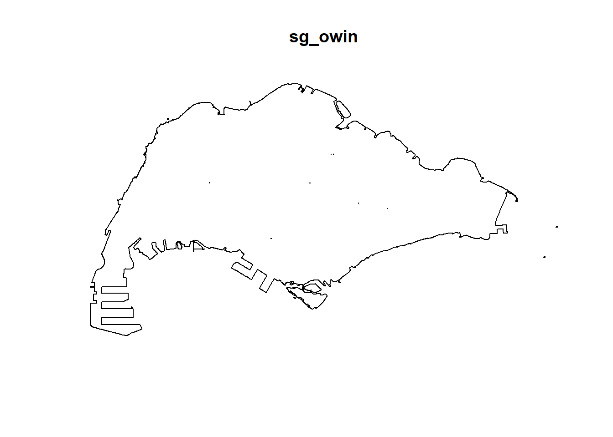
4.5.3 Combining point events object and owin object
In this last step of geospatial data wrangling, we will extract childcare events that are located within Singapore by using the code chunk below.
childcareSG_ppp = childcare_ppp[sg_owin]childcareSG_pppMarked planar point pattern: 1925 points
Mark variables: Name, Description
window: polygonal boundary
enclosing rectangle: [2667.54, 55941.94] x [21448.47, 50256.33] units4.6 Clark-Evan Test for Nearest Neighbour Analysis
Nearest Neighbor Analysis (NNA) is a spatial statistics method that calculates the average distance between each point and its closest neighbor to determine if a pattern of points is clustered, dispersed, or randomly distributed.
In this section, we will perform the Clark-Evans test of aggregation for a spatial point pattern by using clarkevans.test() of spatstat.explore package.
The test hypotheses are:
Ho = The distribution of childcare services are randomly distributed.
H1= The distribution of childcare services are not randomly distributed.
The 95% confident interval will be used.
4.6.1 Perform the Clark-Evans test without CSR
clarkevans.test() of spatstat.explore package support two Clark-Evans test, namely: without CRS and with CRS. In the code chunk below, Clark-Evans test without CSR method is used.
clarkevans.test(childcareSG_ppp,
correction="none",
clipregion="sg_owin",
alternative=c("clustered"))
Clark-Evans test
No edge correction
Z-test
data: childcareSG_ppp
R = 0.53532, p-value < 2.2e-16
alternative hypothesis: clustered (R < 1)QUIZ
1) Statistical conclusion
The test statistic R = 0.535 (well below 1) and the p-value < 2.2e-16.
Translation: the childcare locations are much closer together than we’d expect by random chance—i.e., they are strongly clustered, not evenly spread out.
2) Business communication
What it means: Childcare centres tend to bunch in the same neighbourhoods. Some areas likely have many centres competing, while others may be underserved.
Planners/Govt: check for coverage gaps; prioritise new centres in underserved subzones to improve access.
Operators: avoid saturated hotspots; consider opening in gap areas with demand (e.g., high young-family density, new HDB estates) to face less competition.
Next steps: map hotspots/coldspots and compare with population of 0–6-year-olds, transport access, and waiting lists to target locations effectively.
4.6.2 Perform the Clark-Evans test with CSR
In the code chunk below, the argument method = “MonteCarlo” is used. In this case, the p-value for the test is computed by comparing the observed value of R to the results obtained from nsim (i.e. 39, 99, 999) simulated realisations of Complete Spatial Randomness conditional on the observed number of points.
clarkevans.test(childcareSG_ppp,
correction="none",
clipregion="sg_owin",
alternative=c("clustered"),
method="MonteCarlo",
nsim=99)
Clark-Evans test
No edge correction
Monte Carlo test based on 99 simulations of CSR with fixed n
data: childcareSG_ppp
R = 0.53532, p-value = 0.01
alternative hypothesis: clustered (R < 1)QUIZ
1) Statistical conclusion
R = 0.535 (< 1) and p = 0.01 from the Monte-Carlo CSR test.
This means the childcare locations are significantly more bunched together than random. Under a random layout, there’s only about a 1% chance of seeing this much clustering. So we reject “randomly distributed” and conclude the pattern is clustered.
(Note: This confirms the earlier result without CSR. Using CSR makes the finding more robust.)
Biggest difference for business communication:
Use the CSR result when needed a defensible, stakeholder-friendly statement (“confirmed vs random, ~1% chance due to luck”). The non-CSR result is a strong diagnostic cue, but the CSR framing makes your case more credible for decisions, budgeting, and policy.
4.7 Kernel Density Estimation Method
Kernel Density Estimation (KDE) is a valuable tool for visualising and analyzing first-order spatial point patterns. It is widely considered a method within Exploratory Spatial Data Analysis (ESDA) because it’s used to visualize and understand spatial data patterns by transforms discrete point data (like locations of childcare service, crime incidents or disease cases) into continuous density surfaces that reveal clusters and variations in event occurrences, without making prior assumptions about data distribution. It helps to begin understanding data distribution, identify hotspots, and explore relationships between spatial variables before performing more rigorous analysis.
In this section, you will learn how to compute the kernel density estimation (KDE) of childcare services in Singapore.
4.7.1 Working with automatic bandwidth selection method
The code chunk below computes a kernel density by using the following configurations of density() of spatstat:
kde_SG_diggle <- density(
childcareSG_ppp,
sigma=bw.diggle,
edge=TRUE,
kernel="gaussian") plot(kde_SG_diggle)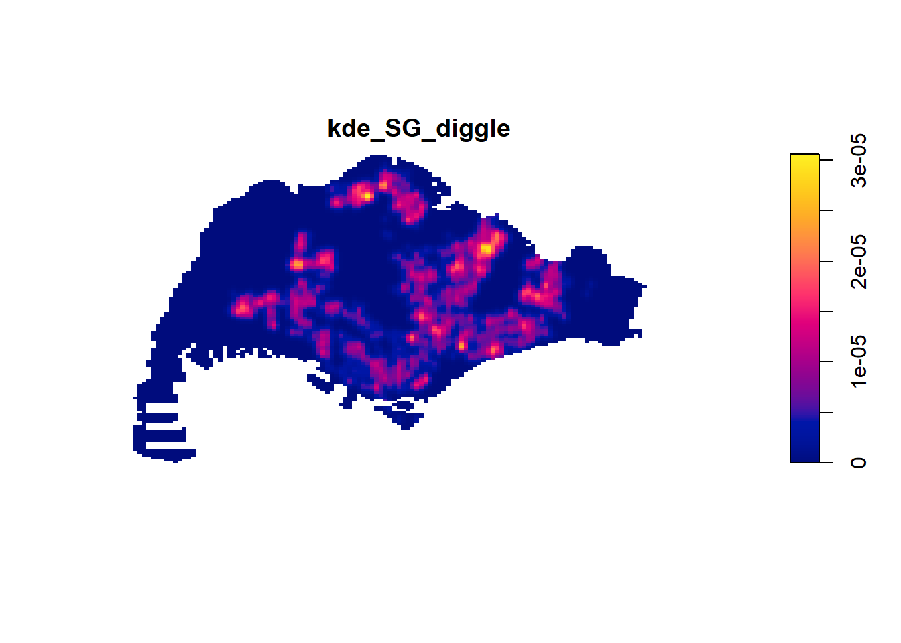
summary(kde_SG_diggle)real-valued pixel image
128 x 128 pixel array (ny, nx)
enclosing rectangle: [2667.538, 55941.94] x [21448.47, 50256.33] units
dimensions of each pixel: 416 x 225.0614 units
Image is defined on a subset of the rectangular grid
Subset area = 669941961.12249 square units
Subset area fraction = 0.437
Pixel values (inside window):
range = [-6.584123e-21, 3.063698e-05]
integral = 1927.788
mean = 2.877545e-06bw <- bw.diggle(childcareSG_ppp)
bw sigma
295.9712 4.7.2 Rescalling KDE values
In the code chunk below, rescale.ppp() is used to covert the unit of measurement from meter to kilometer.
childcareSG_ppp_km <- rescale.ppp(
childcareSG_ppp, 1000, "km")kde_childcareSG_km <- density(childcareSG_ppp_km,
sigma=bw.diggle,
edge=TRUE,
kernel="gaussian")plot(kde_childcareSG_km)4.7.3 Working with different automatic badwidth methods
Beside bw.diggle(), there are three other spatstat functions can be used to determine the bandwidth, they are: bw.CvL(), bw.scott(), and bw.ppl().
Let us take a look at the bandwidth return by these automatic bandwidth calculation methods by using the code chunk below.
bw.CvL(childcareSG_ppp_km) sigma
4.357209 bw.scott(childcareSG_ppp_km) sigma.x sigma.y
2.159749 1.396455 bw.ppl(childcareSG_ppp_km) sigma
0.378997 bw.diggle(childcareSG_ppp_km) sigma
0.2959712 The code chunk beow will be used to compare the output of using bw.diggle and bw.ppl methods.
kde_childcareSG.ppl <- density(childcareSG_ppp_km,
sigma=bw.ppl,
edge=TRUE,
kernel="gaussian")
par(mfrow=c(1,2))
plot(kde_childcareSG_km, main = "bw.diggle")
plot(kde_childcareSG.ppl, main = "bw.ppl")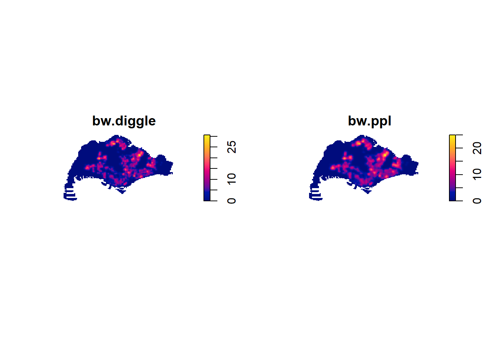
4.7.4 Working with different kernel methods
By default, the kernel method used in density.ppp() is gaussian. But there are three other options, namely: Epanechnikov, Quartic and Dics.
The code chunk below will be used to compute three more kernel density estimations by using these three kernel function.
par(mfrow=c(2,2))
plot(density(childcareSG_ppp_km,
sigma=0.2959712,
edge=TRUE,
kernel="gaussian"),
main="Gaussian")
plot(density(childcareSG_ppp_km,
sigma=0.2959712,
edge=TRUE,
kernel="epanechnikov"),
main="Epanechnikov")
plot(density(childcareSG_ppp_km,
sigma=0.2959712,
edge=TRUE,
kernel="quartic"),
main="Quartic")
plot(density(childcareSG_ppp_km,
sigma=0.2959712,
edge=TRUE,
kernel="disc"),
main="Disc")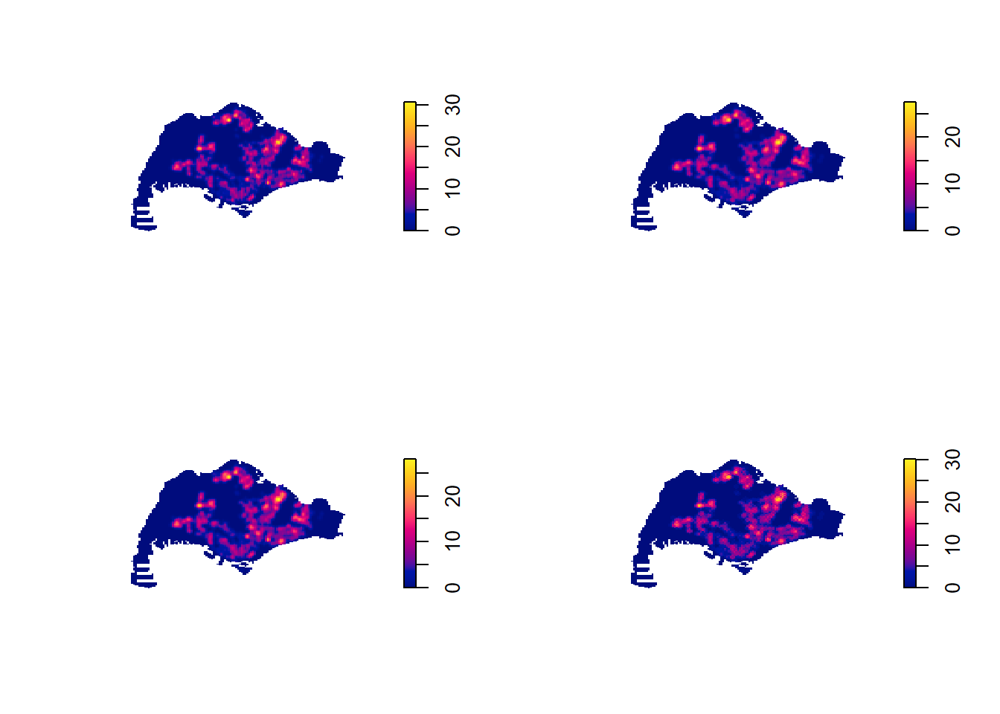
4.8 Fixed and Adaptive KDE
4.8.1 Computing KDE by using fixed bandwidth
Next, you will compute a KDE layer by defining a bandwidth of 600 meter. Notice that in the code chunk below, the sigma value used is 0.6. This is because the unit of measurement of childcareSG_ppp_km object is in kilometer, hence the 600m is 0.6km.
kde_childcareSG_fb <- density(childcareSG_ppp_km,
sigma=0.6,
edge=TRUE,
kernel="gaussian")
plot(kde_childcareSG_fb)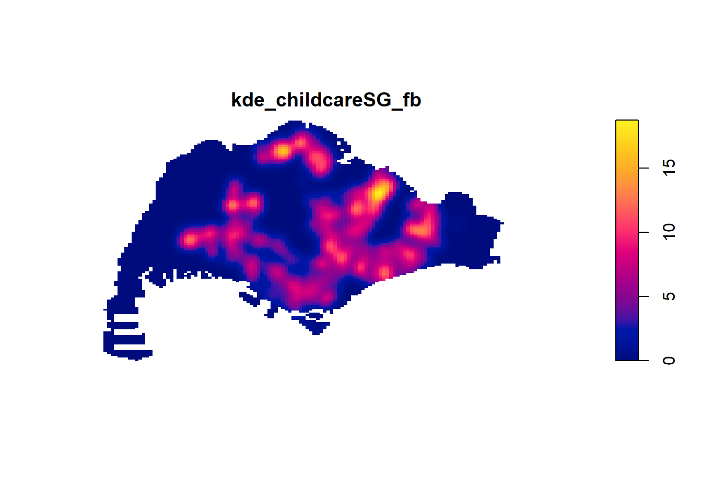
4.8.2 Computing KDE by using adaptive bandwidth
Fixed bandwidth method is very sensitive to highly skew distribution of spatial point patterns over geographical units for example urban versus rural. One way to overcome this problem is by using adaptive bandwidth instead.
In this section, you will learn how to derive adaptive kernel density estimation by using density.adaptive() of spatstat.
kde_childcareSG_ab <- adaptive.density(
childcareSG_ppp_km,
method="kernel")
plot(kde_childcareSG_ab)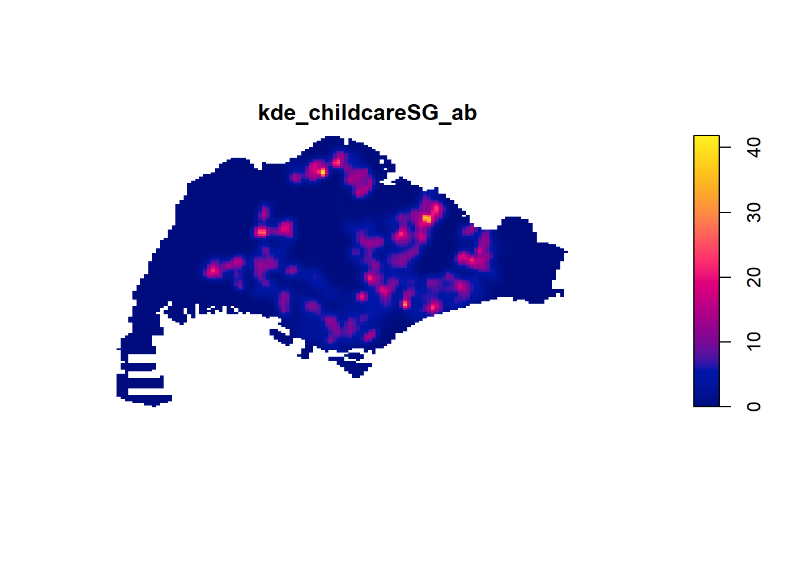
par(mfrow=c(1,2))
plot(kde_childcareSG_fb, main = "Fixed bandwidth")
plot(kde_childcareSG_ab, main = "Adaptive bandwidth")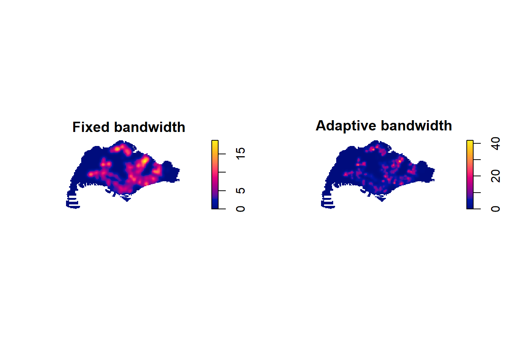
4.9 Plotting cartographic quality KDE map
4.9.1 Converting gridded output into raster
Next, we will convert the im kernal density objects into SpatRaster object by using rast() of terra package.
kde_childcareSG_bw_terra <- rast(kde_childcareSG_km)class(kde_childcareSG_bw_terra)[1] "SpatRaster"
attr(,"package")
[1] "terra"kde_childcareSG_bw_terraclass : SpatRaster
dimensions : 128, 128, 1 (nrow, ncol, nlyr)
resolution : 0.4162063, 0.2250614 (x, y)
extent : 2.667538, 55.94194, 21.44847, 50.25633 (xmin, xmax, ymin, ymax)
coord. ref. :
source(s) : memory
name : lyr.1
min value : -5.824417e-15
max value : 3.063698e+01
unit : km 4.9.2 Assigning projection systems
In code chunk below, crs() of terra is used to assign the CRS information on kde_childcareSG_bw_terra layer.
crs(kde_childcareSG_bw_terra) <- "EPSG:3414"kde_childcareSG_bw_terraclass : SpatRaster
dimensions : 128, 128, 1 (nrow, ncol, nlyr)
resolution : 0.4162063, 0.2250614 (x, y)
extent : 2.667538, 55.94194, 21.44847, 50.25633 (xmin, xmax, ymin, ymax)
coord. ref. : SVY21 / Singapore TM (EPSG:3414)
source(s) : memory
name : lyr.1
min value : -5.824417e-15
max value : 3.063698e+01
unit : km 4.9.3 Plotting KDE map with tmap
Finally, we will display the raster in cartographic quality map using tmap package.
tm_shape(kde_childcareSG_bw_terra) +
tm_raster(col.scale =
tm_scale_continuous(
values = "viridis"),
col.legend = tm_legend(
title = "Density values",
title.size = 0.7,
text.size = 0.7,
bg.color = "white",
bg.alpha = 0.7,
position = tm_pos_in(
"right", "bottom"),
frame = TRUE)) +
tm_graticules(labels.size = 0.7) +
tm_compass() +
tm_layout(scale = 1.0)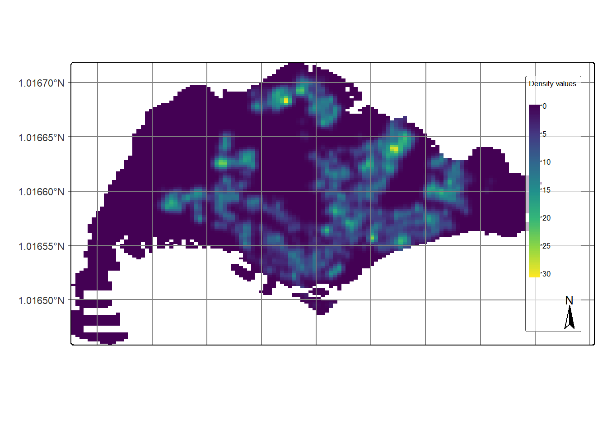
4.10 First Order SPPA at the Planning Subzone Level
In this section, we would like to further our analysis at the planning area level. For simplicity reason, we will focus on Punggol, Tampines Chua Chu Kand and Jurong West planning areas
4.10.1 Geospatial data wrangling
4.10.1.1 Extracting study area
pg <- mpsz_cl %>%
filter(PLN_AREA_N == "PUNGGOL")
tm <- mpsz_cl %>%
filter(PLN_AREA_N == "TAMPINES")
ck <- mpsz_cl %>%
filter(PLN_AREA_N == "CHOA CHU KANG")
jw <- mpsz_cl %>%
filter(PLN_AREA_N == "JURONG WEST")par(mfrow=c(2,2))
plot(st_geometry(pg), main = "Ponggol")
plot(st_geometry(tm), main = "Tampines")
plot(st_geometry(ck), main = "Choa Chu Kang")
plot(st_geometry(jw), main = "Jurong West")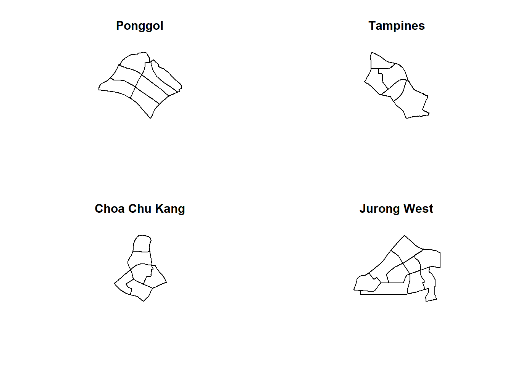
4.10.1.2 Creating owin object
Now, we will convert these sf objects into owin objects that is required by spatstat.
pg_owin = as.owin(pg)
tm_owin = as.owin(tm)
ck_owin = as.owin(ck)
jw_owin = as.owin(jw)4.10.1.3 Combining point events object and owin object
childcare_pg_ppp = childcare_ppp[pg_owin]
childcare_tm_ppp = childcare_ppp[tm_owin]
childcare_ck_ppp = childcare_ppp[ck_owin]
childcare_jw_ppp = childcare_ppp[jw_owin]childcare_pg_ppp.km = rescale.ppp(childcare_pg_ppp, 1000, "km")
childcare_tm_ppp.km = rescale.ppp(childcare_tm_ppp, 1000, "km")
childcare_ck_ppp.km = rescale.ppp(childcare_ck_ppp, 1000, "km")
childcare_jw_ppp.km = rescale.ppp(childcare_jw_ppp, 1000, "km")par(mfrow=c(2,2))
plot(unmark(childcare_pg_ppp.km),
main="Punggol")
plot(unmark(childcare_tm_ppp.km),
main="Tampines")
plot(unmark(childcare_ck_ppp.km),
main="Choa Chu Kang")
plot(unmark(childcare_jw_ppp.km),
main="Jurong West")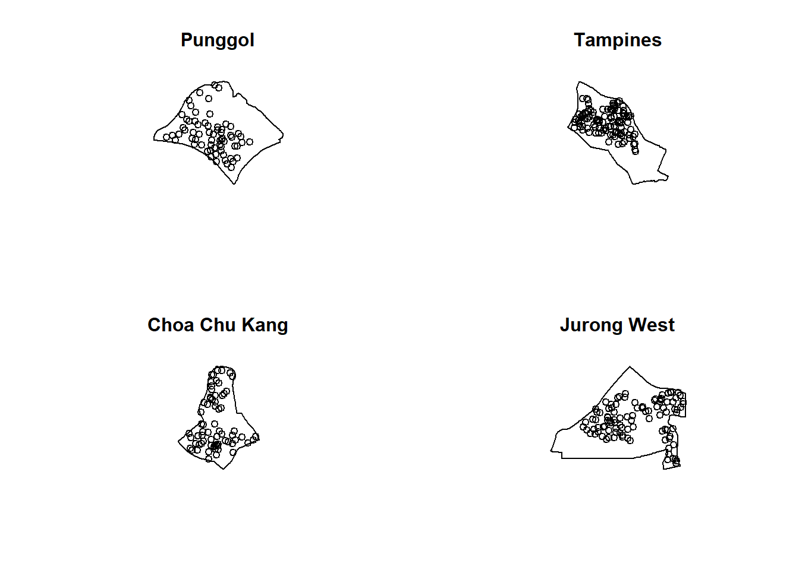
4.10.2 Clark and Evans Test
4.10.2.1 Choa Chu Kang planning area
In the code chunk below, clarkevans.test() of spatstat is used to performs Clark-Evans test of aggregation for childcare centre in Choa Chu Kang planning area.
clarkevans.test(childcare_ck_ppp,
correction="none",
clipregion=NULL,
alternative=c("two.sided"),
nsim=999)
Clark-Evans test
No edge correction
Z-test
data: childcare_ck_ppp
R = 0.84097, p-value = 0.008866
alternative hypothesis: two-sided4.10.2.2 Tampines planning area
In the code chunk below, the similar test is used to analyse the spatial point patterns of childcare centre in Tampines planning area.
clarkevans.test(childcare_tm_ppp,
correction="none",
clipregion=NULL,
alternative=c("two.sided"),
nsim=999)
Clark-Evans test
No edge correction
Z-test
data: childcare_tm_ppp
R = 0.66817, p-value = 6.58e-12
alternative hypothesis: two-sided4.10.3 Computing KDE surfaces by planning area
The code chunk below will be used to compute the KDE of these four planning area. bw.diggle method is used to derive the bandwidth of each
par(mfrow=c(2,2))
plot(density(childcare_pg_ppp.km,
sigma=bw.diggle,
edge=TRUE,
kernel="gaussian"),
main="Punggol")
plot(density(childcare_tm_ppp.km,
sigma=bw.diggle,
edge=TRUE,
kernel="gaussian"),
main="Tempines")
plot(density(childcare_ck_ppp.km,
sigma=bw.diggle,
edge=TRUE,
kernel="gaussian"),
main="Choa Chu Kang")
plot(density(childcare_jw_ppp.km,
sigma=bw.diggle,
edge=TRUE,
kernel="gaussian"),
main="Jurong West")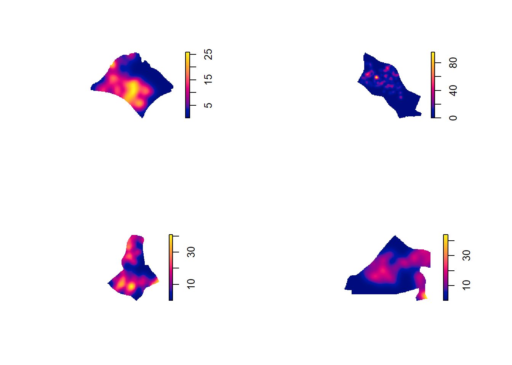